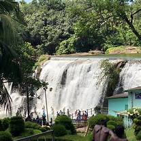
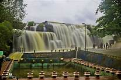
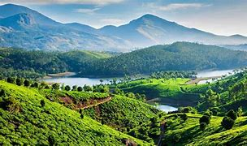
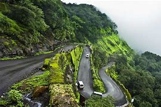
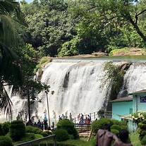
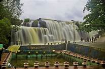
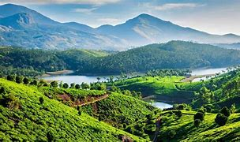
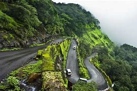

Thiruparapu Water Falls
Thirupparapu waterfalls is the most attractive and most tourist visited places in Kanyakumari Tourism. This beautiful cascading waterfalls in Kanyakumari located 70 kms from Kanyakumari local sightseeing Places on the way to Trivandrum. Height of Thirparappu waterfalls in Kanyakumari is 300 ft., even then the height of the waterfalls is not too high, but the view and fun in this waterfalls in on its peak. The Tamilnadu Tourism department has maintain the falls very well. The wateerfalls in divided with steel rods as 2 sections, one for Men and other one is for women. There is also a small park maintained by the authority where kids can enjoy their time. Kodayar's water falls in this waterfalls before falling here it crosses a river bed in that boating service is also available.
Photos
 






